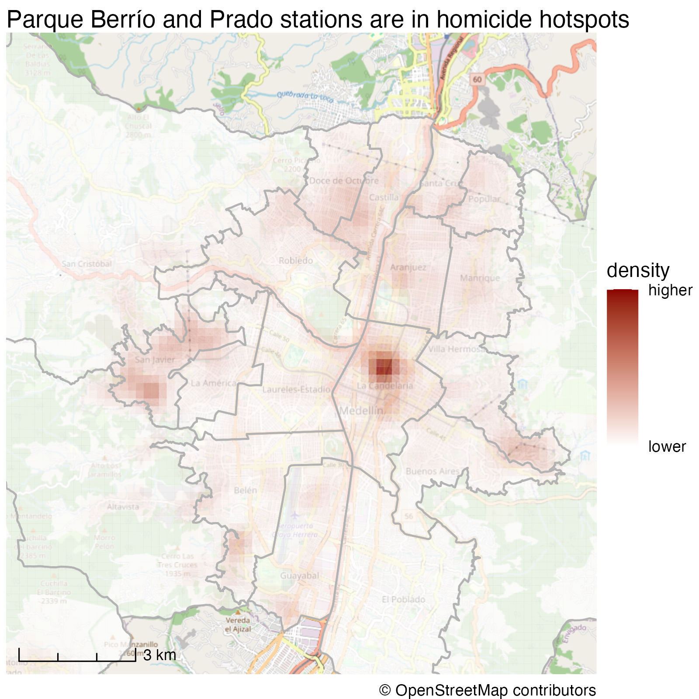
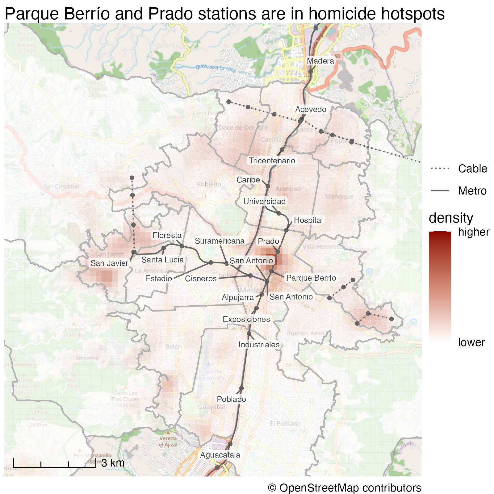
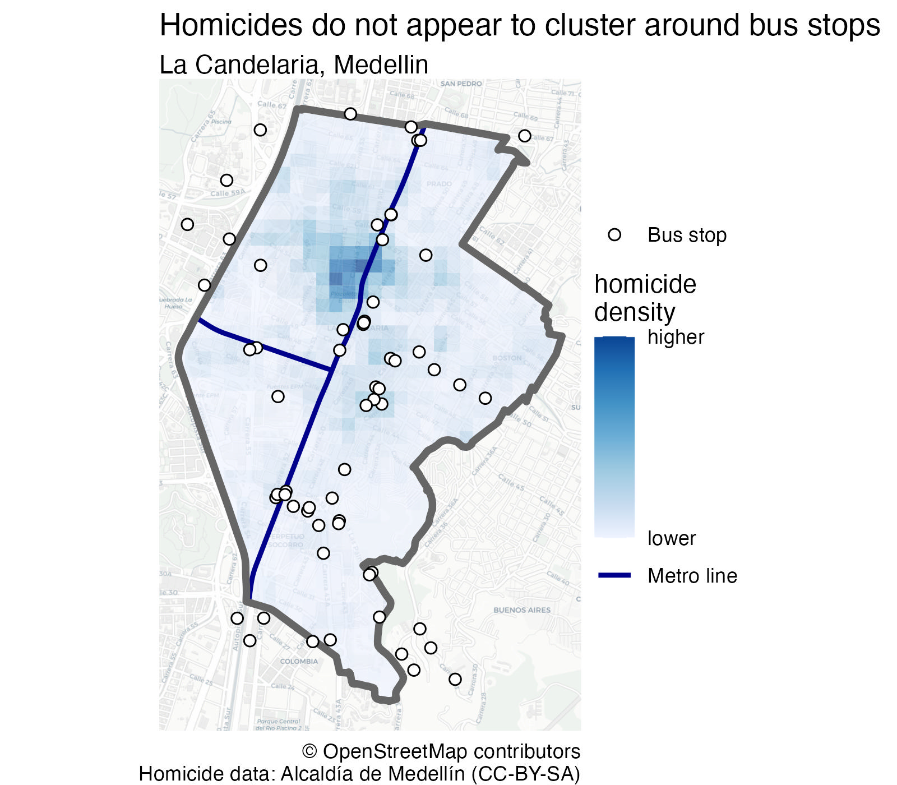
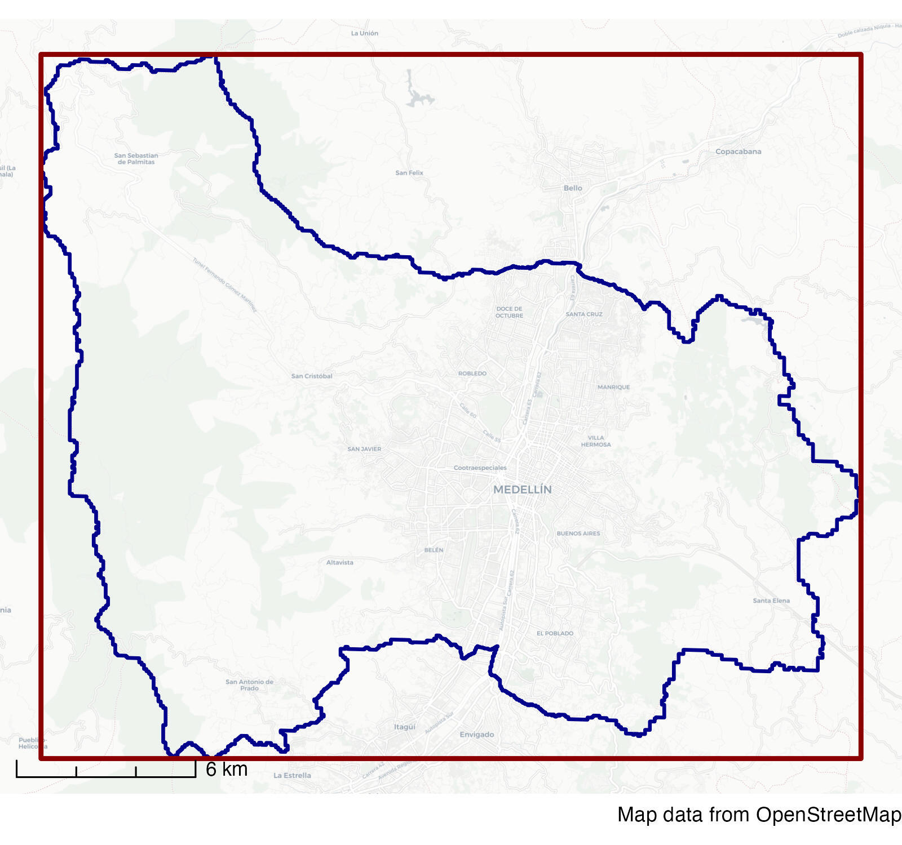
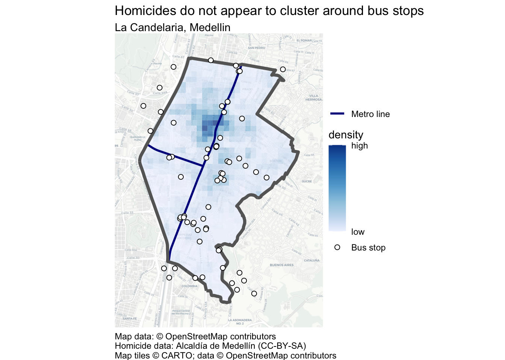

12 Using data about places
Understanding the spatial context of crime is essential for effective crime mapping and analysis. This chapter explores how to make crime maps more informative by incorporating additional data about places. It covers sources of spatial data, including open data repositories and OpenStreetMap, and explains how to use shapefiles to add context to crime patterns.
- Open Positron or – if you already have Positron open – start a new R session by clicking the Restart R (⟳) button in the Console panel. This makes sure no code you ran previously will interfere with the work you do in this chapter.
- Make sure you are working in the crime mapping project workspace you created in Section 1.5. In the top-right corner of the Positron window, you should see a folder icon and the words
crime_mapping. If not, click the File menu, then Open Folder … and choose thecrime_mappingfolder.
12.1 Introduction
The purpose of most crime maps is to help people make decisions, be they professionals working out how best to respond to crime problems or citizens holding local leaders to account. We can make it easier for people to make decisions by putting crime data into a relevant context. We have already started to do this by adding base maps, titles, legends and so on to our maps.
Since crime is concentrated in a few places, readers of our crime maps will often be interested in understanding what features of the environment are related to specific concentrations of crime in particular places. Where patterns of crime are related to particular facilities – such as late-night violence being driven by the presence of bars selling alcohol – it can be useful to highlight specific features on our maps.
As an example, imagine you are the manager responsible for security on the metro network in Medellin, Colombia. There are several mountains within Medellin, so the city metro network consists of both railway lines in the valley and cable cars up the mountains. The security manager for the metro company will certainly analyse violence on the company’s stations and vehicles, but may also be interested in which stations are in neighbourhoods that themselves have high levels of violence.
To help with this, you might produce a map showing the density of homicides recorded by local police.

This is an acceptable crime map: it shows the data in a reasonable way, places the data layer at the top of the visual hierarchy and provides suitable context in the title, legend etc. But it is a much less useful map than it could be because it doesn’t show where the metro stations are and this information is not included in the base map at this scale. A much better map would add extra layers of data showing the metro stations and the lines connecting them.

From this second map, it is much easier to see that Parque Berrío and Prado stations are closest to an area with relatively high numbers of homicides.
In this chapter, you will produce a more-detailed map of the La Candelaria neighbourhood that compares homicide density with bus-stop locations and metro lines:

In this chapter, we will learn how to:
- find and correctly cite open spatial data;
- download, extract and load data supplied as a shapefile;
- identify OpenStreetMap tags for features of interest;
- download OpenStreetMap data using
osmdata; - choose a suitable projected coordinate reference system; and
- add contextual place data to a crime map.
To get started, open a new R script file in Positron and save it as chapter_12.R in the R folder of the workspace you created in Section 1.5. Add a note to the top of this file explaining that the code will create a map of homicides in Medellin, Colombia, then add the code needed to load the packages we will use in this chapter:
Run this line of code to load the packages. You will note that as well as the packages we have used in previous chapters, this code loads a new package – osmdata – that we will learn about in this chapter. If you want to remind yourself about the packages we have already used, see Chapter 3 for here, httr2 and tidyverse, Chapter 5 for sf, and Chapter 6 for sfhotspot.
Remember to run each block of code that you add to the script by pressing .
As we learned in Chapter 11, the Medellin homicide CSV file uses semicolons to separate columns, so we must load it with read_csv2() rather than read_csv(). We will first download the original file into data/raw, then load that local copy.
chapter_12.R
# LOAD DATA --------------------------------------------------------------------
## Load Medellin homicide data ----
# Download the original data
request(
"https://mpjashby.github.io/crimemappingdata/medellin_homicides.csv"
) |>
req_perform(path = here("data", "raw", "medellin_homicides.csv"))
# Note: this dataset uses ';' as the column separator
medellin_homicides <- here("data", "raw", "medellin_homicides.csv") |>
read_csv2() |>
# Remove rows with missing coordinates
drop_na(longitud, latitud) |>
# Convert the data to an SF object
st_as_sf(coords = c("longitud", "latitud"), crs = "EPSG:4326")<httr2_response>
GET https://mpjashby.github.io/crimemappingdata/medellin_homicides.csv
Status: 200 OK
Content-Type: text/csv
Body: On disk '/Users/mattashby/Documents/Crime Mapping Book/data/raw/medellin_homicides.csv' (702486 bytes)ℹ Using "','" as decimal and "'.'" as grouping mark. Use `read_delim()` for more control.Rows: 9360 Columns: 6
── Column specification ────────────────────────────────────────────────────────
Delimiter: ";"
chr (2): sexo, modalidad
dbl (3): longitud, latitud, edad
dttm (1): fecha_hecho
ℹ Use `spec()` to retrieve the full column specification for this data.
ℹ Specify the column types or set `show_col_types = FALSE` to quiet this message.In the rest of this chapter we will use data from different sources to better understand clusters of homicides in the La Candelaria neighbourhood of downtown Medellin.
12.2 Finding data
If you are producing crime maps on behalf of a particular organisation such as a police agency or a body responsible for managing a place, it is likely that they will hold spatial data that is relevant to the local area. For example, many city governments will hold records of local businesses. It will sometimes be necessary to track down which department or individual holds this data, and it may also be necessary to convert data into formats that are useful for spatial analysis or to tidy the data as we did in Chapter 10.
Some organisations may also have agreements to share data with others. For example, both universities and public agencies such as police forces in the United Kingdom have agreements with the national mapping agency Ordnance Survey to share a wide variety of spatial data. If you are producing maps on behalf of an organisation, it will often be useful to ask what data they hold that might be relevant, or ask for a specific dataset you think would help improve a map.
12.2.1 Open data
Open data is data that is released by organisations or individuals that can be freely used by others. Organisations such as local governments increasingly release data about their areas as open data – almost all of the crime and other data we have seen so far in this book is open data released by different local and national governments.
Open data is extremely useful because you can skip the often lengthy and painful process of getting access to data and wrangling it into a format you can use. This means you can move on much more quickly to analysing data, reaching conclusions and making decisions. Watch this video to find out more about the value of open data.
Open data is published in a wide variety of formats and distributed in different ways. Some data might only be distributed by an organisation sending you a DVD or memory stick (yes, even in 2026). Most of the time, however, data will be released online.
Many cities now maintain open-data websites that act as a repository for all their open data. For example, the City of Bristol in England publishes the Open Data Bristol website. Anyone can use this website to download data on everything from population estimates to politicians’ expenses. Many of these datasets can be useful for crime mapping. For example, you can download the locations of CCTV cameras (useful in criminal investigations), or the locations of children’s centres (helpful if a crime-prevention strategy includes visits to such facilities).
Different local governments may use different terms for the same types of information, so it sometimes takes some trial and error to find if a particular dataset is available. Some data might also be held by organisations other than the main local government agency for a particular place. For example, data on the locations of electricity substations (useful if you are trying to prevent metal thefts from infrastructure networks) might be held by a power company. All this means that tracking down a particular dataset might require some detective work.
To try to make this process easier, some countries have established national open-data portals such as Open Data in Canada, Open Government Data Platform India, data.gov.uk in the United Kingdom and data.gov in the United States. There are also international repositories such as the African Development Bank Data Portal, openAfrica and Data Portals, which seeks to list all the open data portals run by different governments and other organisations.
12.2.2 Citing data
Organisations that provide data often do so on condition that users of the data follow certain rules. For example, you can use data on the Open Data Bristol website as long as you follow the conditions of the Open Government Licence. The most-common requirement of an open-data licence is that anyone using the data acknowledges the data source in any maps, reports or other outputs they produce. In the case of the Open Government Licence, users of the data are required to add a declaration to any outputs declaring:
Contains public sector information licensed under the Open Government Licence v3.0.
Complying with open-data licences is a legal requirement, so it is important to make sure you understand what obligations you are accepting when you use a particular dataset. You can typically find the conditions for using a dataset on the website that you download the data from. In Section 7.8.2 we learned that we can add data attribution statements like this to maps with the caption argument to the hotspot_map() function.
Which one of these statements about open data is true?
12.3 Shapefiles
In this course we have used spatial data provided in different formats including geopackages (.gpkg) and geoJSON (.geojson) files, as well as creating spatial objects from tabular data in formats like CSV and Excel files (to read up on different functions for opening different types of data file, see Appendix A). But there is one important spatial-data format that we haven’t yet learned to use: the shapefile.
The shapefile format was created by Esri, the company that makes the ArcGIS suite of mapping software. It was perhaps the first spatial format that could be read by a wide variety of mapping software, which meant that lots of providers of spatial data began to provide data in shapefile format. Shapefiles are limited in various ways that mean they are unlikely to be a good choice for storing your own data, but it is important to know how to use them because many spatial datasets are still provided as shapefiles for historical reasons.
One of the complications of using shapefiles (and why they’re not a good choice for storing your own data) is that different parts of the data are stored in separate files. So while the coordinates of the points, lines or polygons are stored in a file with a .shp extension, the non-spatial attributes of each spatial feature (such as the date on which a crime occurred or the name of a neighbourhood) are stored in a separate file with a .dbf extension and details of the coordinate reference system are stored in a .prj file – a single dataset might be held in up to 16 separate files on a computer. All the files that make up a shapefile have the same file name, differing only in the file extension (e.g. .shp, .dbf, etc.). For example, if a .shp file is called robberies.shp then it will be accompanied by a file called robberies.dbf and one called robberies.prj, as well as a robberies.shx index file and possibly several others. All these separate files make it more-complicated to manage shapefiles than other spatial file formats such as the geopackage.
Because storing spatial data in a shapefile requires multiple different files, shapefile data is usually distributed in a .zip file that contains all the component files. This means that to access a shapefile we will have to add a step to our usual routine for downloading and opening a data file. To minimise the hassle associated with using shapefiles, in general we will:
- download the
.zipfile if we don’t have a local copy already, - create a named directory inside the
data/processeddirectory (which we created in Chapter 1) for the extracted files, - unzip the
.zipfile into that directory, and - load the shapefile data from the project directory.
For example, the routes of metro lines in Medellin are available in shapefile format at:
https://mpjashby.github.io/crimemappingdata/medellin_metro_lines.zipTo load the data from this file, we can use the process outlined above. Add Code 12.3 to your chapter_12.R script file. Read through its accompanying notes to understand what each part of the code does.
chapter_12.R
## Load metro lines ----
# Download zip file
1metro_lines_file <- here("data", "raw", "medellin_metro_lines.zip")
request(
2
"https://mpjashby.github.io/crimemappingdata/medellin_metro_lines.zip"
) |>
req_perform(path = metro_lines_file)
# Unzip the files into a named directory
3metro_lines_dir <- here("data", "processed", "medellin_metro_lines")
4unzip(metro_lines_file, exdir = metro_lines_dir)
# Load the data
metro_lines <- here(metro_lines_dir, "medellin_metro_lines.shp") |>
5 read_sf()- 1
-
Use
here()to create a path for the downloaded ZIP file insidedata/raw. Keeping the original download means we can always return to it if necessary. - 2
-
Download the ZIP file using the same
httr2workflow we have used for other datasets. - 3
-
Use
here()to create a path for a named directory insidedata/processed. The extracted files are processed copies of the original ZIP file, so they should not be stored indata/raw. - 4
-
Unzip the files into the processed-data directory.
unzip()creates the directory if it does not already exist. - 5
- Load the correct file (see below) from the processed-data directory into an R object.
<httr2_response>
GET https://mpjashby.github.io/crimemappingdata/medellin_metro_lines.zip
Status: 200 OK
Content-Type: application/x-zip-compressed
Body: On disk '/Users/mattashby/Documents/Crime Mapping Book/data/raw/medellin_metro_lines.zip' (13031 bytes)Note that although a shapefile consists of several different files, we only need to load the file with the extension .shp – the read_sf() function will find all the data it needs from the other files.
Once we have loaded a shapefile into R using read_sf(), we can treat it in the same way as any other spatial dataset – it is only loading shapefiles that is different from other spatial data formats.
One question you might have when reading Code 12.3 is how did we know that the shapefile we wanted to load was called medellin_metro_lines.shp? To find out the name of the file we want to load, we need a bit of temporary code (if you want to remind yourself about the difference between permanent and temporary code, look back at Section 2.2).
We can find out the name of files within a zip file using the unzip() function together with the argument list = TRUE. This produces a list of files that are inside the zip file, rather than actually unzipping any files. For example, run this code in the R Console to see a list of files in the zip file we downloaded.
Name Length Date
1 medellin_metro_lines.dbf 2299 2023-02-06 22:46:00
2 medellin_metro_lines.prj 145 2023-02-06 22:46:00
3 medellin_metro_lines.shp 16076 2023-02-06 22:46:00
4 medellin_metro_lines.shx 172 2023-02-06 22:46:00From this, you can see that the file with the extension .shp (which is what we need to load) is called medellin_metro_lines.shp. We use here() to combine that file name with the metro_lines_dir path we created in Code 12.3.
What is a shapefile?
Why do shapefiles often come in .zip format?
Once a shapefile is downloaded and unzipped, which function is used to read it?
12.4 Data from OpenStreetMap
Often we can get map data from the organisation we are working for, or from open-data portals run by governments or international organisations. But sometimes they won’t hold the information we need.
Fortunately, there is another source of data: OpenStreetMap (OSM). This is a global resource of map data created by volunteers (and started at UCL), using a mixture of open data from governments, data contributed by charities and data collected by the volunteers themselves. Watch this video to learn a bit more about OpenStreetMap.
We have already used OSM data in this course: all of the base maps we have used when we create maps with hotspot_map() are based on data from OpenStreetMap. But we have very little control over which information is and is not included in base maps. Sometimes we need more control over the data, and that means downloading data direct from OSM.
We can download OSM data into R using the osmdata package. This package allows us to choose particular features from the billions of features worldwide that are included in the OSM database. To choose features, we must:
- specify the area we want to download data for using the
opq()function, - specify what type of features we want to download using the
add_osm_feature()function, - download the data using the
osmdata_sf()function, and - extract the type of spatial object (points, lines or polygons) that we are interested in.
Imagine that in your analysis of homicides in Medellin, you have been asked to consider the question of whether homicides are clustered near to bus stops. To answer this question, we need to know the locations of bus stops in the area we are interested in. This information is not published as open data by the Medellin city authorities. Fortunately we can extract bus-stop locations from OpenStreetMap using the osmdata package.
To do this, we first need to calculate the bounding box of the La Candelaria neighbourhood that we are interested in. A bounding box is the smallest rectangle that a particular spatial shape will fit inside. For example, the red rectangle on this map shows the bounding box of the city of Medellin (shown in blue).

You can calculate the bounding box of an SF object using the st_bbox() function from the sf package. In this case we want the bounding box of the La Candelaria neighbourhood, so we will need to load a dataset that includes the boundary of that neighbourhood. Add this code to the chapter_12.R script file and run it.
<httr2_response>
GET https://mpjashby.github.io/crimemappingdata/medellin_comunas.gpkg
Status: 200 OK
Content-Type: application/octet-stream
Body: On disk '/Users/mattashby/Documents/Crime Mapping Book/data/raw/medellin_comunas.gpkg' (1613824 bytes)We can now calculate the bounding box of the neighbourhood we are interested in. Add this code to the chapter_12.R script file and run it.
All the functions in the osmdata package expect coordinates (such as the corners of a bounding box) to be provided as longitudes and latitudes. If you provide data using any other coordinate reference system you will see an error saying:
Error in `httr2::req_perform()`:
! HTTP 400 Bad Request.If your data is in a projected coordinate system, make sure you use st_transform() to transform the data to use the WGS84 system, EPSG:4326.
The bounding box is the first thing we need to know in order to get data from OpenStreetMap. The second thing we need to know is what search terms to use in the add_osm_feature() function to return the locations of bus stops. OpenStreetMap has hundreds of feature categories, all in the format key=value. Sometimes we will only need to search for a particular key (category of feature), such as the highway key that contains all the features that show roads (from motorways to winding lanes leading to farms in the countryside), tracks and paths. In other cases, we will want to search for a particular value (a type of feature within a category), such as searching for the value natural=water to search for lakes, rivers, etc.
The best place to find out how a feature you are interested in is recorded in the OSM database is to look at the OpenStreetMap Wiki. Bus stops are recorded in OSM using the tag highway=bus_stop.
Now that we know the bounding box of the area we are interested in and the tag for the type of feature we want, we can download the data from OpenStreetMap.
The Overpass API used by osmdata_sf() is a shared online service. If you see an error such as HTTP 429 Too Many Requests, wait a few minutes and then try running the query again. This error usually means the service is temporarily busy, rather than that there is a problem with your code.
The bus_stops object returned by osmdata_sf() is a list of objects. If you type the name of the object in the R Console and press , you will see a summary of the contents of the bus_stops object:
Object of class 'osmdata' with:
$bbox : 6.22450932830104,-75.5802925457919,6.26512401936258,-75.5538503495463
$overpass_call : The call submitted to the overpass API
$meta : metadata including timestamp and version numbers
$osm_points : 'sf' Simple Features Collection with 62 points
$osm_lines : NULL
$osm_polygons : 'sf' Simple Features Collection with 0 polygons
$osm_multilines : NULL
$osm_multipolygons : NULLYou can see that the object bus_stops has a fairly complex structure, but nested within it is an object called osm_points that is an SF object with 62 rows and another SF object called osm_polygons. Even within a particular type of feature, some places might be represented as points (e.g. a point placed at a bus stop) while others are represented as polygons (e.g. the outline of a bus station).
We can use the pluck() function from the purrr package (part of the tidyverse) to extract the parts of the bus_stops object that we want. To see the first few rows of the SF object osm_points, we can run this code in the R Console:
Rows: 62
Columns: 25
$ osm_id <chr> "847830985", "1561073855", "2300293115", "2418112…
$ name <chr> "Las estatuas", "La Alpujarra", "Barrio Colombia"…
$ access <chr> NA, NA, NA, NA, NA, NA, NA, NA, NA, NA, NA, NA, N…
$ alt_name <chr> NA, NA, "Estación Barrio Colombia", NA, NA, NA, N…
$ bench <chr> "no", NA, "yes", NA, NA, "no", "no", "no", "no", …
$ bin <chr> "yes", NA, "yes", NA, NA, NA, NA, NA, NA, "no", N…
$ bus <chr> "yes", NA, "yes", NA, "yes", "yes", "yes", "yes",…
$ `check_date:shelter` <chr> NA, NA, NA, NA, NA, NA, NA, NA, NA, NA, NA, NA, N…
$ covered <chr> NA, NA, NA, NA, NA, "no", "no", "no", "no", "no",…
$ highway <chr> "bus_stop", "bus_stop", "bus_stop", "bus_stop", "…
$ lit <chr> NA, NA, "yes", NA, NA, NA, NA, NA, NA, NA, NA, NA…
$ local_ref <chr> NA, "La Alpujarra", NA, NA, NA, NA, NA, NA, NA, N…
$ `name:en` <chr> NA, NA, NA, NA, NA, NA, NA, NA, NA, NA, NA, NA, "…
$ `name:signed` <chr> NA, NA, NA, NA, NA, NA, NA, NA, NA, NA, NA, NA, N…
$ network <chr> NA, NA, "Metroplus", NA, "Metroplus", NA, NA, NA,…
$ note <chr> NA, NA, NA, NA, "Sentido Norte Sur", NA, NA, NA, …
$ operator <chr> NA, NA, "Metro de Medellín", NA, "Metro de Medell…
$ panoramax <chr> NA, NA, NA, NA, NA, NA, NA, NA, NA, NA, NA, NA, N…
$ public_transport <chr> "platform", NA, "platform", NA, "platform", "plat…
$ `ref:signed` <chr> "no", NA, NA, NA, NA, NA, NA, NA, NA, NA, NA, NA,…
$ shelter <chr> "yes", "no", "yes", NA, "yes", "no", "no", "no", …
$ source <chr> NA, NA, NA, NA, NA, NA, NA, NA, NA, NA, NA, NA, N…
$ tactile_paving <chr> "no", NA, NA, NA, NA, NA, NA, NA, NA, NA, NA, NA,…
$ wheelchair <chr> NA, NA, "yes", NA, "yes", NA, NA, NA, NA, NA, NA,…
$ geometry <POINT [°]> POINT (-75.57696 6.260205), POINT (-75.5734…We can see from this that osmdata_sf() has returned a number of different data fields for each bus stop in the area we are interested in. Most of the fields are blank, but there is a name column and a geometry column that we can use to plot the locations of the bus stops.
Now that we have the locations of bus stops in or near La Candelaria, let’s map them and compare them to the locations of homicides. To do that, we can create a kernel density layer of homicides, as we learned to do in Chapter 6.
We will transform the data to EPSG:3115, a projected CRS for Medellín whose coordinates are measured in metres. This makes it easy to specify a 100-metre cell size when we create the density grid. See Section 6.2.1 for how to choose a suitable projected CRS.
Add this code to the chapter_12.R file and run it.
chapter_12.R
## WRANGLE DATA ----------------------------------------------------------------
# Create neighbourhood boundary
la_candelaria <- medellin_comunas |>
filter(nombre == "LA CANDELARIA") |>
# Transform the data to a local coordinate reference system
st_transform("EPSG:3115")
# Estimate homicide density
homicide_density <- medellin_homicides |>
# Use the same CRS as `la_candelaria`
st_transform("EPSG:3115") |>
# Extract only those homicides occurring within the La Candelaria
# neighbourhood (otherwise `hotspot_kde()` will be very slow)
hotspot_clip(la_candelaria) |>
# Estimate density of homicides
hotspot_kde(
grid = hotspot_grid(la_candelaria, cell_size = 100),
bandwidth_adjust = 0.33,
quiet = TRUE
) |>
# Clip the result to the neighbourhood boundary
hotspot_clip(la_candelaria)Removed 8,021 rows (86.4% of original rows) from `data`
Removed 61 rows (6.9% of original rows) from `data`Note that since we have used hotspot_clip() twice, this code produces two messages to explain how many rows have been removed from the data. The first message tells us that when we clipped the dataset of homicides in the whole city to the boundary of the La Candelaria neighbourhood, most of the rows were removed from the dataset. This makes sense because La Candelaria is a small area of the city, so most homicides in Medellin occur outside that neighbourhood. The second message tells us that when we clipped the kernel density estimate to the neighbourhood boundary, a small proportion of rows were removed from that dataset. This also makes sense because the convex hull produced by hotspot_grid() will not be a perfect fit for the neighbourhood boundary. We could suppress these messages with the quiet = TRUE argument to hotspot_clip() if we wanted to.
We now have everything we need to map homicides in La Candelaria in relation to bus stops. Let’s add to our script file the code needed to create a density map.
chapter_12.R
la_candelaria_metro_lines <- metro_lines |>
st_transform(st_crs(la_candelaria)) |>
hotspot_clip(la_candelaria, quiet = TRUE)
# PLOT MAP ---------------------------------------------------------------------
place_data_map <- hotspot_map(
homicide_density,
basemap_type = "cartolight",
caption = str_glue(
"Map data: © OpenStreetMap contributors\n",
"Homicide data: Alcaldía de Medellín (CC-BY-SA)"
)
) +
# Add metro lines within the neighbourhood
geom_sf(
aes(colour = "Metro line"),
data = la_candelaria_metro_lines,
linewidth = 1
) +
# Add neighbourhood boundary
geom_sf(data = la_candelaria, colour = "grey40", fill = NA, linewidth = 1.5) +
# Add bus stop locations
geom_sf(
aes(shape = "Bus stop"),
data = pluck(bus_stops, "osm_points"),
colour = "black",
fill = "white",
size = 2
) +
scale_colour_manual(values = c("Metro line" = "darkblue")) +
scale_shape_manual(values = c("Bus stop" = 21)) +
# Add plot labels
labs(
title = "Homicides do not appear to cluster around bus stops",
subtitle = "La Candelaria, Medellin",
colour = NULL,
shape = NULL
)
place_data_map
Most of this code should be familiar to you from previous chapters – if you would like to refresh your memory on the code needed to produce a kernel density map, look back to Chapter 6. Before adding the metro lines, we use hotspot_clip() to keep only the portions inside La Candelaria. This prevents the map from expanding to show the entire metro network when we are interested in only one neighbourhood.
From this map, it looks like homicides do not cluster particularly around bus stops. This would probably be welcome information for the city’s public transport managers.
Just as with other sources of map data, you are legally required to follow the OpenStreetMap attribution guidelines if you use OSM data. The code in Code 12.11, for example, cites data from two sources:
- “© OpenStreetMap contributors” acknowledges that both the base map and the bus-stop locations were obtained from OpenStreetMap.
- “Homicide data: Alcaldía de Medellín (CC-BY-SA)” acknowledges that the Medellin homicide data were released by the Mayor of Medellin under the Creative Commons Attribution Share-alike (CC-BY-SA) licence.
What type of data can be obtained from OpenStreetMap?
Which R package is used to retrieve data from OpenStreetMap?
What does the opq() function do in the osmdata package?
12.5 In summary
In this chapter we have learned how to find open data, including data from OpenStreetMap, and add it to our maps to help readers better understand crime patterns. We will be able to use these skills to add data to future maps that we make so that readers can gain more insight into crime patterns or other phenomena that we might be analysing.
We have practised how to:
- find and correctly cite open spatial data;
- download, extract and load a shapefile while preserving the original download;
- identify suitable OpenStreetMap tags and query them using
osmdata; - choose a suitable projected coordinate reference system; and
- combine crime and contextual place data in an informative map.
Your complete chapter_12.R script should now look like this:
chapter_12.R
# This script produces a map of the density of homicides in the La Candelaria
# area of Medellin, Colombia, together with bus stops in or near the area
# Load packages
pacman::p_load(here, httr2, osmdata, sf, sfhotspot, tidyverse)
# LOAD DATA --------------------------------------------------------------------
## Load Medellin homicide data ----
# Download the original data
request(
"https://mpjashby.github.io/crimemappingdata/medellin_homicides.csv"
) |>
req_perform(path = here("data", "raw", "medellin_homicides.csv"))
# Note: this dataset uses ';' as the column separator
medellin_homicides <- here("data", "raw", "medellin_homicides.csv") |>
read_csv2() |>
# Remove rows with missing coordinates
drop_na(longitud, latitud) |>
# Convert the data to an SF object
st_as_sf(coords = c("longitud", "latitud"), crs = "EPSG:4326")
## Load metro lines ----
# Download zip file
metro_lines_file <- here("data", "raw", "medellin_metro_lines.zip")
request(
"https://mpjashby.github.io/crimemappingdata/medellin_metro_lines.zip"
) |>
req_perform(path = metro_lines_file)
# Unzip the files into a named directory
metro_lines_dir <- here("data", "processed", "medellin_metro_lines")
unzip(metro_lines_file, exdir = metro_lines_dir)
# Load the data
metro_lines <- here(metro_lines_dir, "medellin_metro_lines.shp") |>
read_sf()
## Load neighbourhood boundary ----
request(
"https://mpjashby.github.io/crimemappingdata/medellin_comunas.gpkg"
) |>
req_perform(path = here("data", "raw", "medellin_comunas.gpkg"))
medellin_comunas <- here("data", "raw", "medellin_comunas.gpkg") |>
read_sf() |>
janitor::clean_names()
# GET OSM DATA -----------------------------------------------------------------
# Calculate neighbourhood bounding box
la_candelaria_bbox <- medellin_comunas |>
filter(nombre == "LA CANDELARIA") |>
st_bbox()
# Define the bounding box of the area we want to search
bus_stops <- opq(la_candelaria_bbox) |>
# Define the features we want
add_osm_feature(key = "highway", value = "bus_stop") |>
# Download those features for that area
osmdata_sf()
## WRANGLE DATA ----------------------------------------------------------------
# Create neighbourhood boundary
la_candelaria <- medellin_comunas |>
filter(nombre == "LA CANDELARIA") |>
# Transform the data to a local coordinate reference system
st_transform("EPSG:3115")
# Estimate homicide density
homicide_density <- medellin_homicides |>
# Use the same CRS as `la_candelaria`
st_transform("EPSG:3115") |>
# Extract only those homicides occurring within the La Candelaria
# neighbourhood (otherwise `hotspot_kde()` will be very slow)
hotspot_clip(la_candelaria) |>
# Estimate density of homicides
hotspot_kde(
grid = hotspot_grid(la_candelaria, cell_size = 100),
bandwidth_adjust = 0.33,
quiet = TRUE
) |>
# Clip the result to the neighbourhood boundary
hotspot_clip(la_candelaria)
la_candelaria_metro_lines <- metro_lines |>
st_transform(st_crs(la_candelaria)) |>
hotspot_clip(la_candelaria, quiet = TRUE)
# PLOT MAP ---------------------------------------------------------------------
place_data_map <- hotspot_map(
homicide_density,
basemap_type = "cartolight",
caption = str_glue(
"Map data: © OpenStreetMap contributors\n",
"Homicide data: Alcaldía de Medellín (CC-BY-SA)"
)
) +
# Add metro lines within the neighbourhood
geom_sf(
aes(colour = "Metro line"),
data = la_candelaria_metro_lines,
linewidth = 1
) +
# Add neighbourhood boundary
geom_sf(data = la_candelaria, colour = "grey40", fill = NA, linewidth = 1.5) +
# Add bus stop locations
geom_sf(
aes(shape = "Bus stop"),
data = pluck(bus_stops, "osm_points"),
colour = "black",
fill = "white",
size = 2
) +
scale_colour_manual(values = c("Metro line" = "darkblue")) +
scale_shape_manual(values = c("Bus stop" = 21)) +
# Add plot labels
labs(
title = "Homicides do not appear to cluster around bus stops",
subtitle = "La Candelaria, Medellin",
colour = NULL,
shape = NULL
)
place_data_mapSave chapter_12.R by pressing .
To check that the analysis is reproducible, restart R using the Restart R (⟳) button in Positron’s Console panel, then run the script from beginning to end.
Keep the script in the R folder, the original downloads in data/raw and the extracted shapefile components in data/processed.
To find out more about the skills we have worked on in this chapter, you may want to read:
Answer these questions to check you have understood the main points covered in this chapter. Write between 50 and 100 words to answer each question.
- Why is it important to incorporate additional spatial data when creating crime maps?
- What are the key differences between open data and proprietary data sources?
- What are shapefiles, and what challenges do they present when working with spatial data?
- How does OpenStreetMap (OSM) work as a data source, and what steps are involved in retrieving spatial data from OSM using R?
- Why is it necessary to check the terms of use and provide attribution when using open data sources?
The OpenStreetMap logo is a trademark of the OpenStreetMap Foundation and is used with their permission. This chapter is not endorsed by or affiliated with the OpenStreetMap Foundation.